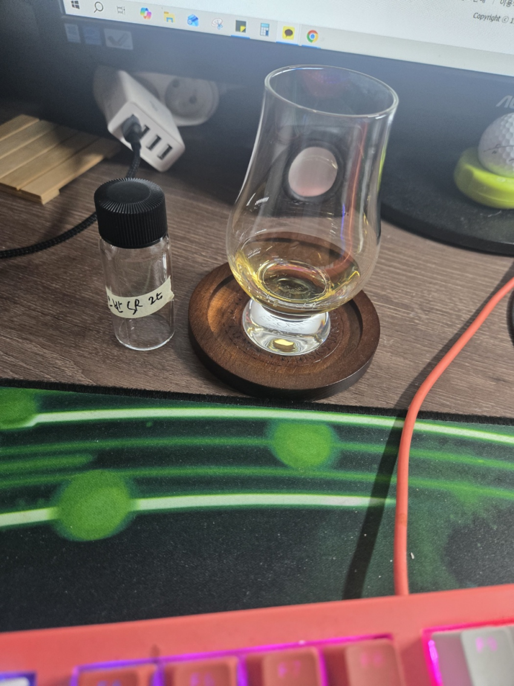

n 플로럴, 풍선껌, 당류, 시트러스, 바나나, 약한 피트
화사한 향이 바로 맞이해준다 다음으로 약간 불량식품스러운 풍선껌 향으로 변하며
달달한 당류의 향 약간의 시트러스한 향이 끝난뒤 부드러운 바나나 향으로 맞이해준다.
피트가 있나 싶을 정도로 약한 피트향이난다.
p 레몬 필, 자몽, 당류, 바닐라, 비스켓, 바나나 플로럴
레몬 필의 자몽의 쌉살하면서 시트러스함이 느껴지며
당류와 바닐라의 단맛 비스켓류의 고소함과
바나나의 맛과 플로럴한 맛이 난다.
f 비스켓, 바닐라, 피트, 당류,
긴여운
약간의 고소함과 바닐라 맛이나고
피트가 좀 강하게 느껴지며 목에 당류의 끈적임이 남는다.
* 총 평 *
오 상당히 맛있는 오반입니다.
매우 코츠월드 스러운 맛이 나서 놀랫습니다.
코츠월드와 뭔가 뉘양스와 맛이 비슷해서 다시 보게되는 오반입니다.
오반에 좀더 흥미로워 지는 한잔이었습니다.